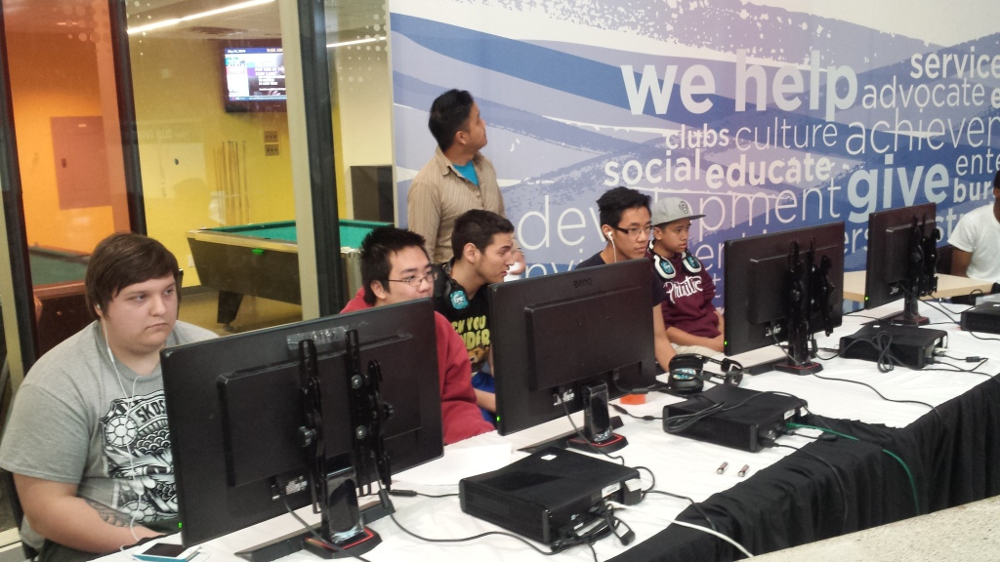

GAMING | An IASC Major Enjoys Games?! Crazy I know...
As an IASC student, it may be a little obvious that I enjoy video games. Not mostly as a hobby but I enjoy video games as a competitive hobby or eSport as many would put it. Below I have added a few photos over the past few years from tournaments and other related things.

Photo taken from UGC Niagara 2015.

Photo taken from WGG 2015.

Photo taken from WGG 2014.
The series of photos were all taken from tournaments I have attended within the past few years. As I am a heavy into the FPS genre, I compete in Call of Duty. But besides that I enjoy eSports and many other games as well. My all time favourite game is Final Fantasy 7 and all time favourite console would be the dreamcast or ps2 as those were my main consoles as a kid and while I was growing up.